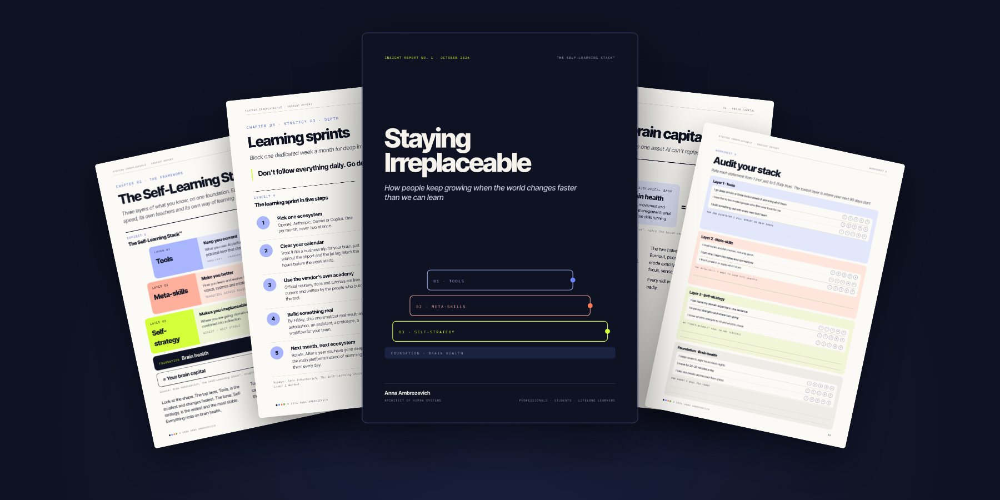

Report No. 1
For everyone
Staying Irreplaceable
How to keep learning when AI rewrites work: three layers, one foundation and a 90-day plan.
- Learning sprints, learning circles, the 3-mention rule
- Meta-skills and a personal self-strategy
- Worksheets and a 90-day plan
Get it free →50 pages · PDF